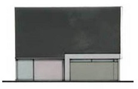
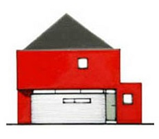
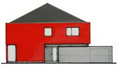
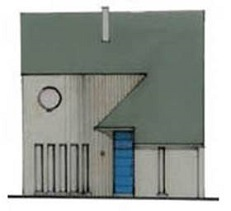
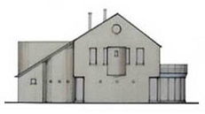
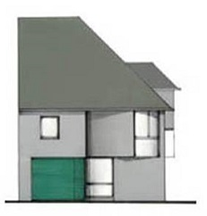
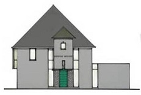
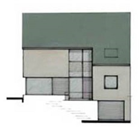
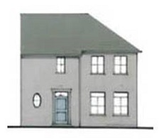

Architects Cantersteen
Address: Naamsestraat 108, 3500 Hasselt
Phone: 011/21 44 44
Fax: 011/21 44 55
Email: info@cantersteen.be
Our designs
You can see some of our designs here...
| Type |
Front |
Side |
| 01 |
 |
 |
| 02 |
 |
 |
| 03 |
 |
 |
| 04 |
 |
 |
| 05 |
 |
 |
| 06 |
 |
 |
Design guidelines
The houses we build, will
- be appropriate to a rural landscape
- have rooflines that complement the building site’s topography
- be horizontal in appearance rather than vertical
- use landscaping to soften the effect of the house
- use high quality materials
- use natural materials wherever possible
- use natural or recessive colors
Making your dreams come true
Copyright 2014 Architects Cantersteen